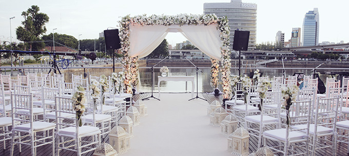

Casamiento
UNA CELEBRACIÓN ÚNICA EN
BUENOS AIRES WALK EVENTOS

Buenos Aires Walk es una empresa de carácter joven y dinámico que se encarga de la organización integral de cualquier tipo de evento. Proponemos una solución sencilla a la difícil tarea de planear su casamiento, ocupándonos hasta del más mínimo detalle. Contamos con un gran salón, de estilo moderno y con todo lo necesario para vivir una noche que quedará por siempre en la memoria de todos.
El lugar tiene todo tipo de espacios que pueden disfrutarse totalmente el día de su fiesta. El más importante es el salón principal, ubicado en el primer piso y con una capacidad máxima de 180 personas en cena formal con pista de baile, 220 en modo banquete, y 350 en modo cocktail. En la planta baja está la recepción, donde podrán dar la bienvenida a sus invitados. Además, en el edificio encontrarán las siguientes zonas e instalaciones:
- Ascensor y escalera
- Escenario
- Galería exterior
- Suite con baño compartimentado
- Toilettes, guardarropa y sanitario para discapacitados
- Vestuarios y sanitarios independientes para el personal
El catering elabora sus comidas de forma artesanal dentro del propio establecimiento y en las horas próximas al evento, por lo que siempre consumirá cosas frescas. Trabaja con materias primas y bebidas de primera calidad e incluye, aparte de lo puramente gastronómico, todo lo siguiente:
- Maître, recepcionista, barman, mozos y camareras
- Chef y ayudantes de cocina
- Mantelería, vajilla y cristalería
Se acerca uno de los momentos más importantes de tu vida y queremos compartirlo junto a vos. Te ofrecemos el lugar ideal para hacer realidad la boda de tus sueños.